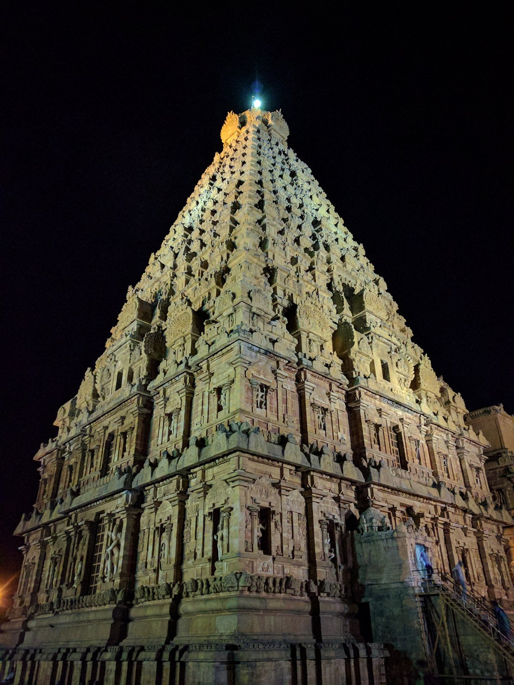

Image Viewer
Full Archaeological & Inscriptional Inspection
100%
Medieval Indian History • Module 8: Early Medieval & Rajput Era
Following Harsha's demise, northern India fragmented into aristocratic Rajput clans battling for Kannauj in the Tripartite Struggle, while Turkish incursions led by Mahmud of Ghazni and Muhammad Ghori reshaped north India's destiny at the Battles of Tarain (1191 & 1192). In South India, the Imperial Cholas founded a formidable maritime empire and pioneering village democracies.

Built by Rajaraja I; UNESCO World Heritage site known as the Great Living Chola Temple.
Lucent GK essentials covering capitals, founders, famous sovereigns, and architectural legacies.
Founded by Vasudeva with initial capital at Shakambhari; moved to Ajmer (*Ajayameru*) by Ajayaraja. Greatest king was Prithviraj Chauhan III (1178–1192 AD).
Founded by Nagabhata I who successfully checked Arab incursions from Sindh. Dominated the Tripartite Struggle under Mihira Bhoja (836–885 AD).
Founded by Gopala (750 AD) to terminate the prevailing chaos (*Matsyanyaya*). Staunch patrons of Mahayana & Vajrayana Buddhism.
Founded by Nannuka with capital at Khajuraho and later Mahoba/Kalinjar. Renowned for majestic temple architecture.
| Dynasty | Capital | Founder | Greatest Ruler & Lucent Exam Fact |
|---|---|---|---|
| Paramaras of Malwa | Dhar • Ujjain | Upendra / Krishnaraja | Raja Bhoja (1018–1060 AD): Polymath author of *Samarangana Sutradhara* (architecture); built Bhojpur Shiva temple. |
| Solankis / Chalukyas of Gujarat | Anhilwara (Patan) | Mularaja I | Bhima I: Rebuilt Somnath temple in stone; his minister Vimala Shah built the marble Dilwara temple at Mt. Abu. |
| Gahadavalas of Kannauj | Kannauj • Varanasi | Chandradeva | Jaichandra: Defeated and killed by Muhammad Ghori in the Battle of Chandawar (1194 AD). |
| Senas of Bengal | Nabadwip / Lakhnauti | Samantasena | Lakshmanasena: Patronized Jayadeva (*Gita Govinda*); kingdom overthrown by Bakhtiyar Khilji (1202 AD). |
From Muhammad bin Qasim's conquest of Sindh to the historic Battles of Tarain.
Seventeen-year-old Arab commander sent by Al-Hajjaj (Governor of Iraq). Defeated Brahmin ruler Dahir at the Battle of Rawar (712 AD).
Led 17 plundering incursions into India. Plundered Mathura and Kannauj (1018 AD) and destroyed the famed Somnath Temple (1025 AD) during the reign of Solanki king Bhima I.
Ruler of Ghur who sought permanent territorial conquest rather than mere plunder, laying the cornerstone of the Delhi Sultanate.
Capital at Thanjavur and Gangaikondacholapuram; pioneers of maritime power and local autonomy.
Re-established Chola fortunes by capturing Thanjavur from the Muttaraiyar chieftains; built temple to goddess Nisumbhasudini.
Conquered northern Ceylon (Anuradhapura), Maldives, and Chera fleet at Kandalur Salai. Built the colossal granite Brihadisvara Temple (Thanjavur).
Complete conquest of Sri Lanka (captured king Mahinda V). Marched up to the Ganges defeating Mahipala of Bengal. Transoceanic naval raid against Srivijaya (Sumatra, Malaya, Kedah).
The Chola administration is internationally renowned for its deep grassroots decentralization recorded in the Uttaramerur Inscriptions (919 & 921 AD) of Parantaka I:
The empire that Arab traveler Sulaiman ranked among the four greatest empires of the contemporary world.
Founded by Dantidurga (753 AD) by overthrowing the Chalukyas of Badami (Kirtivarman II). Performed the *Hiranyagarbha* (Golden Womb) ritual at Ujjain.
Marched into northern India, defeating both Vatsaraja Pratihara and Dharmapala of Bengal to dominate Kannauj.
Constructed during the reign of Krishna I (756–773 AD). A monolithic rock-cut marvel carved from a single basalt volcanic cliff from the top down.
Over 200,000 tonnes of rock excavated without any structural joints; dedicated to Lord Shiva.
Jain scholar-emperor (814–878 AD) who compared himself to Ashoka for peace and religious patronage. Authored Kavirajamarga, the earliest Kannada work on poetics.
Court patronized Acharya Jinasena (*Adipurana*) and mathematician Mahaviracharya (*Ganitasarasangraha*).
Master every question on Prithviraj Chauhan, Mahmud Ghazni, Ghori, and Chola governance.
Loading flashcard...
Click card to reveal answerLoading answer...
Click to flip backLoading quiz question...
Full Archaeological & Inscriptional Inspection